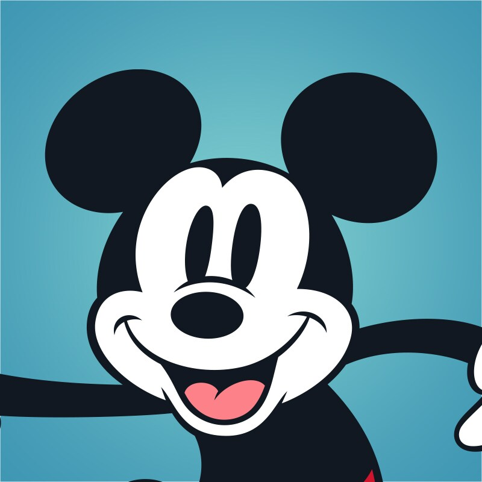
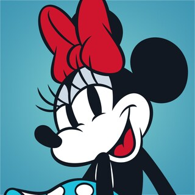
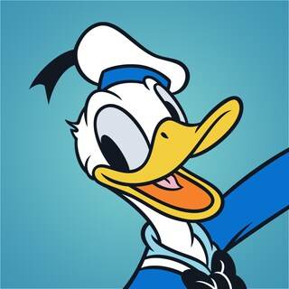
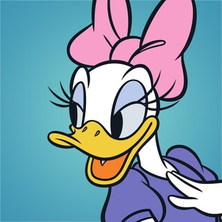
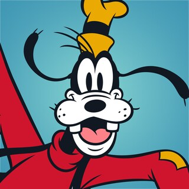

| Image of MT5FDC | Info |
|---|---|
|

Mickey Mouse |
Info about Mickey Mouse:
Mickey Mouse is one of the most popular disney and cartoon characters in the world.
Mickey Mouse debuted in Steamboat Willie and came to be because Walt Disney lost over the rights of Oswald the Lucky Rabbit from Universal Pictures, Mickey Mouse was originally named "Mortimer Mouse" but changed it to Mickey Mouse, Mortimer Mouse would be later used as one of Mickey's rivals like Pete.
Mickey Mouse is friends with everyone but his most remarkable friends are Donald Duck, Goofy, Daisy Duck, Clarabelle the Cow and his Companion, Pluto. Mickey Mouse is Minnie's boyfriend and has an intimate relationship with her. Mickey Mouse's personality shows that he is optimistic and a friend to everyone and loves to go on adventure. |

Minnie Mouse |
Info about Minnie Mouse:
Minnie Mouse debuted in Steamboat Willie just like Mickey and to be the love interest for Mickey Mouse. Minnie Mouse is the long-time girlfriend of Mickey Mouse. Minnie Mouse Appearance is a Anthromorphic mouse just like with Mickey with red/pink bow on her head, polka-dotted dress, with yellow heel shoes.Minnie Mouse is best friends with Daisy and friends with Donald, Goofy, Clarabelle, and Pluto. Minnie Mouse's personality is sweet and enjoys dancing and singing. She loves to spend time with her sweetheart, being Mickey Mouse. |
|

Donald Duck |
Info about Donald Duck:
Donald Duck debuted in the Wise Little Hen. Donald Duck's appearance consist of his sailor suit, a bowtie, and a sailor cap. Donald Duck became more famous for his semi-unintelligable voice when talking. Donald Duck's personality is that he can easily be tempered and his anger is expressed via outbursts of quacking, but he has a heart of gold and loyal to his friends. Donald Duck is Daisy Duck's boyfriend. |
|

Daisy Duck |
Info about Daisy Duck:
Daisy Duck debuted in the short, Mr. Duck Steps Out. Daisy Duck's appearance consists of a hair bow, purple and pink aesthetic with heeled shoes just like Minnie. Daisy Duck in a way is a female counterpart of Donald Duck because they are quite similar. Daisy Duck's personality is sassy and friends to many and Minnie's best friend and shown to be a loving and caring girlfriend to her guy, Donald. |
|

Goofy
|
Info about Goofy:
Goofy debuted in Mickey's Revue. Goofy's appearance consists of his iconic rumpled hat and his misfit garments. Goofy is well known for his signature guffaw just like Donald. Goofy has many girlfriends in comics and movies but the most prominent ones are Mrs. Goof who is Goofy's wife and Clarabelle the Cow, Goofy's girlfriend. Goofy's personality is humble and good-natured though he can be slow-witted and clumsy, he never loses his willingness to try his best at anything. |